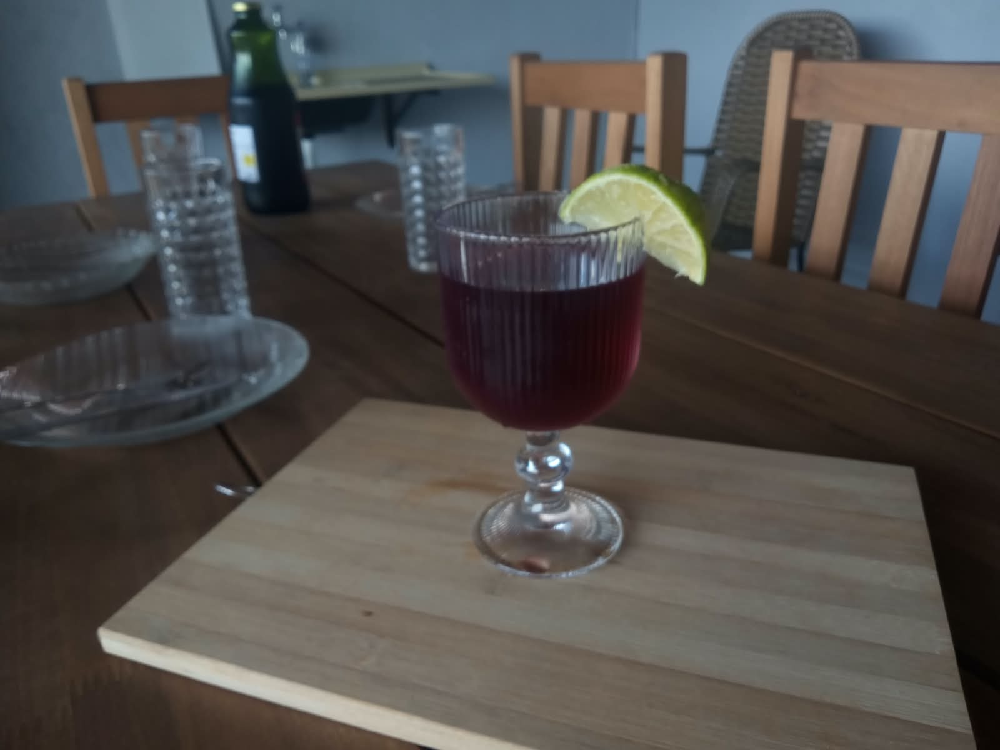

Composição registrada
Rum encorpado, suco de romã, pimenta-rosa, bitters e rodela de limão.
Faixa associada
Sangue Latino · Secos & Molhados
OUVIR / LOCALIZAR A FAIXANota de contexto
A canção fala de identidade latino-americana e da persistência de quem atravessa violências e imposições. No contexto das ditaduras que marcaram a região, essa imagem de resistência ganha uma leitura política, mesmo sem nomear um governo específico.